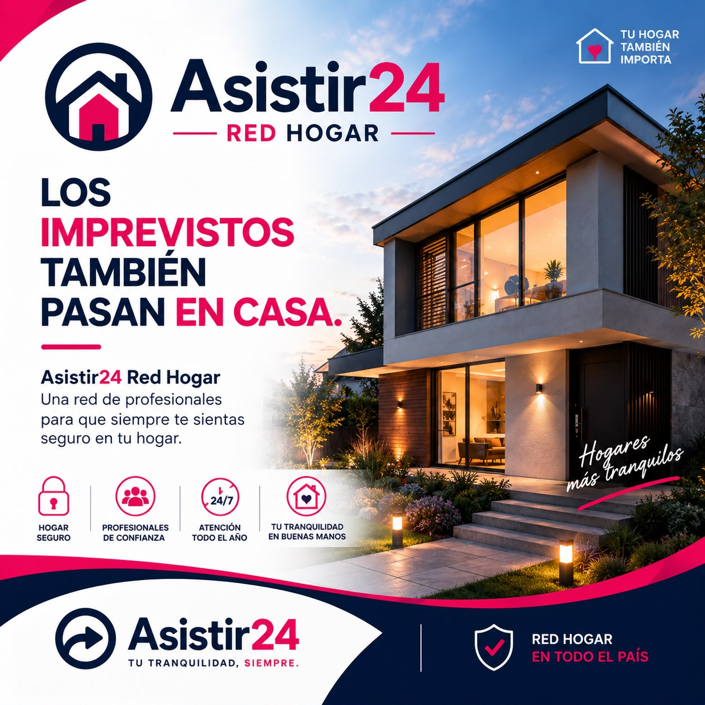

🔒
Cerrajería
Aperturas, cambios y urgencias de cerraduras.
Asistir24 coordina profesionales para resolver emergencias y necesidades del hogar con seguimiento operativo.

Coordinamos el profesional adecuado según servicio, zona y disponibilidad.
Aperturas, cambios y urgencias de cerraduras.
Pérdidas, reparaciones y destapes.
Fallas e intervenciones eléctricas.
Revisión y reparación según corresponda.
Mantenimiento, instalación y reparación.
Asistencia para sistemas de calefacción.